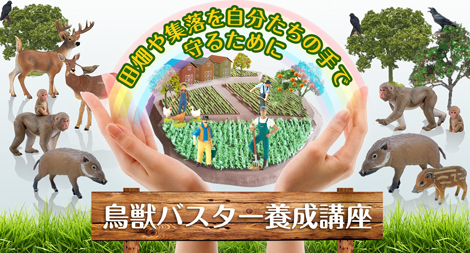

お知らせ
報道発表
株式会社ドコモｇａｃｃｏ
一般社団法人日本オープンオンライン教育推進協議会
愛媛県が「ｇａｃｃｏ」を活用した
地域活性化に向けたオンライン講座を開講
株式会社ＮＴＴドコモの子会社である株式会社ドコモｇａｃｃｏは、一般社団法人日本オープンオンライン教育推進協議会（以下ＪＭＯＯＣ）公認の、日本初の大規模公開オンライン講座（ＭＯＯＣ※1）「ｇａｃｃｏ®（ガッコ）」（ http://gacco.org/）を活用して、えひめいやしの南予博2016実行委員会（会長 愛媛県知事 中村 時広）による愛媛県の魅力ある地域資源を学ぶオンライン講座「えひめ南予通信大学（講座名）」（ＮＰＯ法人いよココロザシ大学※2への委託事業）を２０１６年４月２０日に開講することが決定し、本日より募集を開始します。
http://gacco.org/）を活用して、えひめいやしの南予博2016実行委員会（会長 愛媛県知事 中村 時広）による愛媛県の魅力ある地域資源を学ぶオンライン講座「えひめ南予通信大学（講座名）」（ＮＰＯ法人いよココロザシ大学※2への委託事業）を２０１６年４月２０日に開講することが決定し、本日より募集を開始します。
愛媛県では、県南西部に位置する「南予地域」の自然、歴史、食文化など様々な魅力を発信する観光振興イベント「えひめいやしの南予博２０１６」が２０１６年３月２６日（土）～１１月２０日（日）にわたって開催されます。
本講座では、南予の産業等についての学習を通じ、魅力的な地域資源を受講生に学んでもらうことで、「南予」のブランド化を目指します。また、講座内容と連携した対面授業として、現地体験型イベントを実施する予定です。
株式会社ドコモｇａｃｃｏは、今回のような地域の魅力を発信する講座の提供を通じて、全国の自治体の地方創生に関する新たな取り組みを支援してまいります。
１．「えひめ南予通信大学」講座の概要
（１）講座概要： |
愛媛県南予地方（４市５町）の魅力を「愛育フィッシュ、真珠、シルク、みかん、ニホンカワウソ」の産業を切り口に学びます。 |
（２）講座内容： |
宇和島市、八幡浜市、大洲市、西予市、内子町、伊方町、松野町、鬼北町、愛南町からなる愛媛県南予地域は、緑深い山々が連なる四国山地と、美しい島や海岸が広がる宇和海・瀬戸内海を有しており、自然を生かした産業が盛んです。 |
（３）講 師： |
松原 孝博（愛媛大学南予水産研究センター教授） |
２．「えひめいやしの南予博２０１６」の概要
「えひめいやしの南予博２０１６」は、「さとに憩い、ひとに和む。えひめ南予の、いやし旅。」をキャッチフレーズに、宇和島市、八幡浜市、大洲市、伊予市、西予市、内子町、伊方町、松野町、鬼北町、愛南町で開催する観光振興イベントです。
南予の豊かな「自然」「歴史文化」を背景に、様々な「食・食文化」を軸として、「サイクリング」「アウトドア」「町歩き」等をテーマにし、地域の特性を生かした多彩なプログラム、コンテンツを予定しています。
３．「ｇａｃｃｏ」における関連講座の提供実績
「ｇａｃｃｏ」では、下記のような観光や地域の歴史や文化に関する講座の開講実績および官公庁や自治体における導入実績があります。
|
「旅館経営教室」 国土交通省観光庁サービス産業革新推進機構 代表理事 内藤 耕 |

|
「観光・レジャー産業のマネジメント －業界イノベーションの種をさぐる－」 桜美林大学 山口 有次 他 |

|
「歴史都市京都の文化・景観・伝統工芸」 立命館大学矢野 桂司、木立 雅朗 |

 |
「鳥獣バスター養成講座」 熊本県くまもと農業アカデミー |
| 本件に関する報道機関からのお問い合わせ先 |
|
株式会社ドコモｇａｃｃｏ 担当 大谷、竹内 TEL：０３－３４５６－８１１１ いよココロザシ大学 担当 泉谷 TEL：０８９－９３１－７５３７ 一般社団法人日本オープンオンライン教育推進協議会 担当：竹岡、永井 TEL：０３-３２９５-３５５５ |